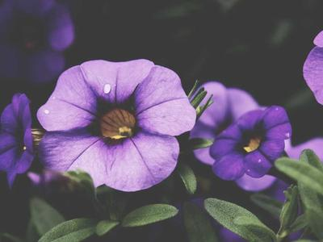

Главная | Вкусняшки | Одежда и стиль | Цветочки | Котики и уют
Цветы создают невероятную атмосферу уюта. Мне нравятся пионы, ромашки, розы и яркие подсолнухи.

Почитать про растения можно на Википедии.